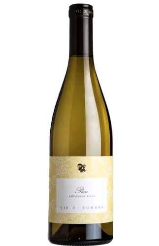

<!DOCTYPE html>
<html lang="it">
<head>
    <meta charset="UTF-8">
    <meta name="viewport" content="width=device-width, initial-scale=1.0">
    <title>Festività 2024</title>
    <style>
        @font-face {
            font-family: 'Merry Holiday';
            src: url('images/Merry Holiday.ttf') format('truetype');
            font-weight: normal;
            font-style: normal;
        }
        body, html {
            margin: 0;
            padding: 0;
            height: 100%;
        }
        body {
            font-family: 'Roboto', sans-serif;
            background-image: url('images/linen_background_new.png');
            background-repeat: repeat;
            color: #ff0000;
            font-size: 18px;
            display: flex;
            flex-direction: column;
        }
        .page-container {
            display: flex;
            flex-direction: column;
            min-height: 100vh;
        }
        .content {
            flex: 1;
            position: relative;
            z-index: 1;
            padding-left: 100px;
        }
        .container {
            width: 80%;
            margin-left: auto;
            margin-right: auto;
            overflow: hidden;
            padding: 20px 0;
        }
        header {
            background: #ff0000;
            color: #fff;
            min-height: 70px;
            border-bottom: #8b0000 3px solid;
            display: flex;
            align-items: center;
            padding: 0 20px;
        }
        header h1 {
            margin: 0;
            text-align: center;
            width: 100%;
            font-family: 'Merry Holiday', cursive;
        }
        .garland {
            position: absolute;
            left: 0;
            top: 0;
            bottom: 0;
            width: 100px;
            background-image: url('images/christmas-garland.png');
            background-repeat: repeat-y;
            background-size: contain;
            z-index: 0;
        }
        .wine-details {
            margin-top: 20px;
        }
        a {
            color: #ff0000;
            text-decoration: none;
        }
        .wine-image {
            max-width: 100%;
            height: auto;
            margin: 20px auto;
            display: block;
        }
        #audioToggle {
            position: fixed;
            bottom: 20px;
            right: 20px;
            z-index: 1000;
        }
    </style>
</head>
<body>
    <div class="page-container">
        <header>
            <h1>Festività 2024</h1>
        </header>
        <div class="content">
            <div class="garland"></div>
            <div class="container">
                <div class="wine-details">
                    <h2>Vie di Romans - Friuli Isonzo DOC Sauvignon Blanc "Piere" 2020 </h2>
                    <p><strong>Annata:</strong> 2020</p>
                    <p><strong>Vitigno:</strong> Sauvignon Blanc 100%</p>
                    <p><strong>Regione:</strong> Friuli venezia Giulia - Loc. Vie di Romans, 1 - 34070 Mariano del Friuli (GO)</p>
					<p><strong>Contenuto alcolico:</strong> 14,52% vol.</p>
                    <p><strong>Acidità totale:</strong> 5,75 g/l</p>
                    <p><strong>pH:</strong> 3,46</p>
                    <p><strong>Età delle viti:</strong> 18 anni</p>
                    <p><strong>Resa:</strong> 51,5 q/ha</p>
                    <p><strong>Degustazione</strong> Giallo dorato. I molteplici sentori sembrano quasi esplodere nel calice. Ha un bouquet complesso, con aromi di fiori bianchi, cera dapi, foglia di pomodoro e frutta tropicale. La bocca è sensuale e profonda, liscia, setosa e cremosa, con una persistenza in cui la polpa fruttata mantiene una durata impressionante. È ottimo con pietanze a base di pesce, risotti di verdure e primi piatti saporiti. Da abbinare allinsalata di aragosta e astice.</p>
					<p><strong>Produzione:</strong> VIGNETO Categoria: bianco, secco
Vitigno: sauvignon blanc 100% (prevalentemente cloni italiani a grappolo spargolo, rispetto ai francesi)
Vigneto di provenienza: Piere
Area geografica: Friuli Isonzo Rive Alte
Località: Mariano del Friuli (GO)
Età media dell'impianto: 18 anni
Densità d'impianto: 6.000 ceppi/ha
Resa per ettaro e per ceppo: 51,5 q/ha e 0,83 kg/pianta
Sesto d'impianto: 2,40 x 0,70 m - 1,60 x 1 m
Superficie: 12,5 ha in produzione
Altitudine: 33 m s.l.m.
Esposizione: Nord-Sud
Sistema di allevamento: guyot semplice
Profilo del suolo: mediamente profondo, con tessitura moderatamente ghiaiosa-ciottolosa, argilla ricca di silice mista a conglomerato. Ben drenato
Periodo di vendemmia: 3, 4, 5, 7 e 9 settembre 2020 VINIFICAZIONE
Diraspatura e pigiatura
Macerazione prefermentativa a freddo: 8 °C
Decantazione statica a freddo
Fermentazione: 16÷19 °C
Lieviti: ceppi selezionati
Durata della fermentazione: 23 giorni
Fermentazione malolattica: non svolta
Affinamento: 8 mesi sur lies
Chiarifica: naturale senza coadiuvanti in acciaio
Imbottigliamento: 25, 26 e 27 maggio 2021
Affinamento in bottiglia: 9 mesi
Vie di Romans non è una cantina qualunque, bensì è una tra le aziende vitivinicole italiane più riconosciute e apprezzate a livello internazionale, senza dubbio per merito dell’impegno della famiglia Gallo, che appartiene al mondo della vite e del vino da oltre un secolo.
Con passione e con grande dedizione nel lavoro, l’azienda, dal 1978 è condotta da Gianfranco Gallo, il quale operando coraggiose e audaci scelte, è riuscito ad affermare in tutte le etichette uno stile qualitativo di grande personalità.
Partendo dalla profonda conoscenza dell’ambiente, Vie di Romans è stata una tra le primissime aziende a valorizzare ed esaltare il concetto di cru. Basandosi sulla consapevolezza che ogni vigneto gode di piccole ma importanti diversità, la cantina goriziana sfrutta proprio queste diversità, trasformandole in un preziosissimo patrimonio in grado di offrire ai vini inediti insiemi di sfumature organolettiche. Con la ferma convinzione che l’altissima qualità dell’intera gamma sia irriproducibile in altri contesti, tutte le bottiglie che escono dalla cantina sono contrassegnate, oltre che con il nome del vitigno, anche con quello del vigneto di derivazione: altro segno di una grande e profonda attenzione per il terroir.
Tutto comincia, quindi, dal lavoro tra i filari, dove ogni scelta agronomica è pensata per avere i più alti livelli qualitativi nei grappoli, per cui a un’alta densità d’impianto corrisponde una inversamente proporzionale produzione per pianta.
In cantina si parte da quello che è il massimo rispetto per la materia prima, cosicché la mano dell’uomo diviene interprete di ciò che la stagione e il territorio hanno saputo creare nel frutto.
Il risultato di tutto questo è dato da etichette semplicemente straordinarie. Dallo Chardonnay “Vie di Romans” al “Ciampagnis”, dal “Dessimis” Pinot Grigio ai Sauvignon “Pierre” e “Vieris”, passando per il Friulano “Dolee” e per la Malvasia “Dis Cumieris”, senza ovviamente tralasciare “Flor di Uis”, “Dut Un” e “Mauris”: vini mitici. </p>
                </div>
                <a href="lista-vini.html">Torna alla Lista dei Vini</a>
            </div>
        </div>
        
    </div>
    <button id="audioToggle">Attiva/Disattiva Musica</button>
    <audio id="backgroundAudio" loop>
        <source src="images/musica2024-2.mp3" type="audio/mpeg">
        Il tuo browser non supporta l'elemento audio.
    </audio>
    <script>
        const audioToggle = document.getElementById('audioToggle');
        const backgroundAudio = document.getElementById('backgroundAudio');
        let isPlaying = false;

        audioToggle.addEventListener('click', function() {
            if (isPlaying) {
                backgroundAudio.pause();
                audioToggle.textContent = 'Attiva Musica';
            } else {
                backgroundAudio.play();
                audioToggle.textContent = 'Disattiva Musica';
            }
            isPlaying = !isPlaying;
        });
    </script>
</body>
</html>
